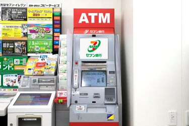

After visiting Japan during this past spring break, I was inspired to make a website about essential things to do and NOT to do when visiting Japan, especially for the first time.
Japan is a very popular destination for vacations amongst families and individuals.
DOs
Passport: Really goes without saying that a passport is necessary to legally fly over there...
IC Card: An IC card is the most convenient method to pay for public transportation, and even normal transactions.
An IC card application can also be downloaded on iPhones for free.
eSIM: A temporary eSIM for internet connection while going from place to place is very convenient.
Pack light! Always have free space in your luggage for souvenirs and other things that could be bought during your trip.
Plan where to go before going. Navigating around towns in Japan, especially Tokyo isn't the easiest thing, as there are various places to go.
So, it would be time-saving to plan where to go during your trip.
DON'Ts
Don't bring a lot of basic toiletries.
Even the cheapest of Japanese hotels provide towels,
blankets and pillows, toothbrushes and toothpaste, soap and shampoo.
Too many clothes.: Same reason as the previous one, leave enough room in suitcase for possible souvenirs.
Don't buy a new bank card. Currency Exchange can be done through certain ATMs in convenience stores like 7/11 or FamilyMart.
There are a lot of these stores all around Japan so it shouldn't be difficult to find these ATMs.

Here is a video that covers everything mentioned in this website and more: